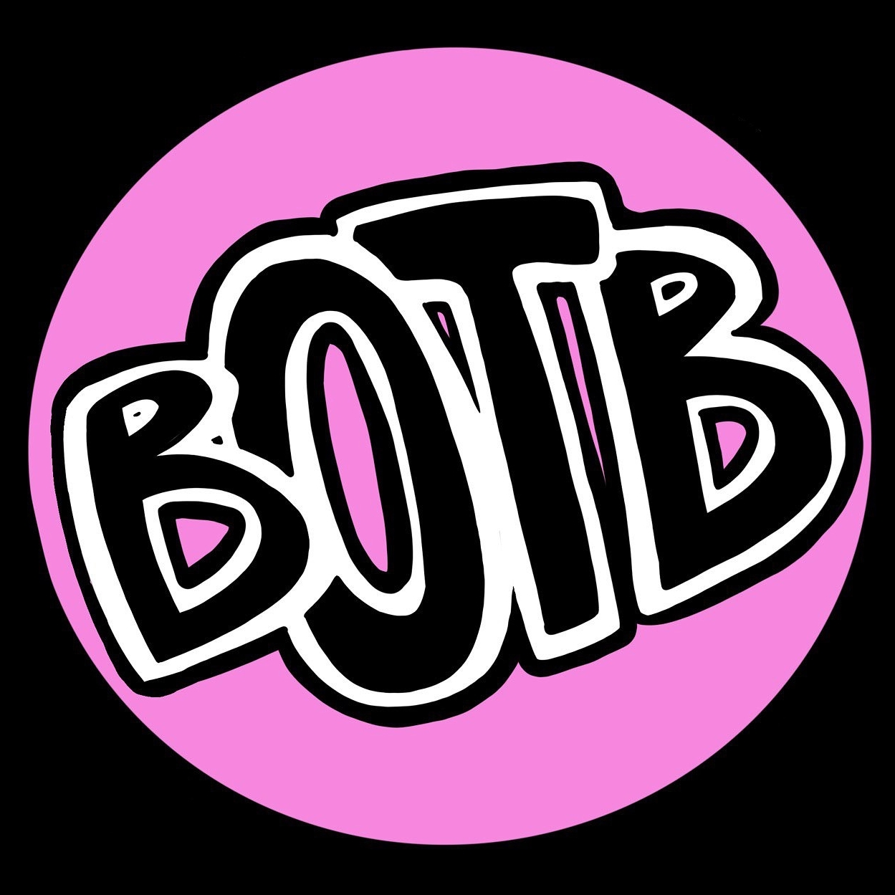

BABY OF THE BUNCH FAN! 

Welcome to my BTOB Fanpage!
baby of the bunch was founded in 2015!
The members are
Brontë
(voc, git🎸),
Valla
(dr🥁, voc),
Finja
(voc, bass🎸) and the multi-multi-instrumental
Luca (key🎹 + div. instr.🪕🪘⌨️📯)
...that is to say, they can all play more than one instrument, but
Luca is in an harmonic class of her own.
In 2018 they made their EP debut with
 and their streaming debut with the song
Banana 🍌ce Cream 🍨
, which has over 80K downloads. In the same year the band won the
audience choice award at the Bandclash
and their streaming debut with the song
Banana 🍌ce Cream 🍨
, which has over 80K downloads. In the same year the band won the
audience choice award at the Bandclash

In 2020 they released their second EP
 , which included the single
UR Mom 👩.
, which included the single
UR Mom 👩.
Their single
I LIKE THAT 👍🏻👍🏼👍🏽👍🏾👍🏿
has had air time not only in Germany and the USA, but also in South
America🌎.
BTOB has appeared on ZDF,
 RBB Fritz and
RBB Fritz and
 Deutschlandfunk Nova.
My favorite gig of the band to date was providing musical accompaniment
at the founding of the Deutsch-Griechische Jugendwerk in Leipzig in
2019.
Deutschlandfunk Nova.
My favorite gig of the band to date was providing musical accompaniment
at the founding of the Deutsch-Griechische Jugendwerk in Leipzig in
2019.
The songs were simultaneously signed🧏. All music should be
simultaneously signed🤟!